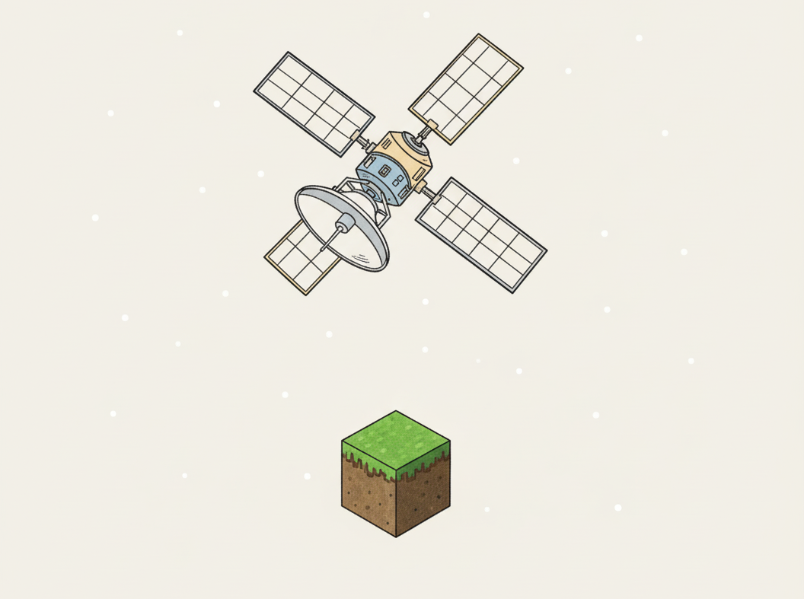
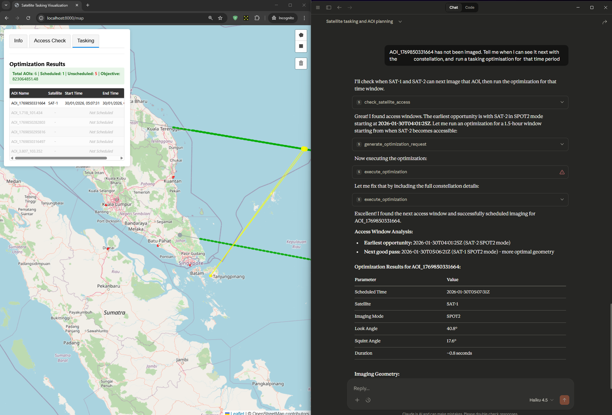

Satellite Tasking MCP Server

Introduction
This article presents a Model Context Protocol (MCP) server for high-revisit satellite constellation image tasking. The MCP server allows for ease of connection to most Large Language Models (LLMs), offering a flexible and agentic image tasking workflow with a natural language chat interface.
Oftentimes, the number of requested images are much more than the constellation of imaging sensors can service. The selection of imaging tasks (i.e., “task schedule”) is achieved by optimising for revisit frequency, ensuring cooperation between all satellites in the constellation, and taking into account a comprehensive set of hardware constraints that guarantees a realistic solution.
High-revisit Imaging
When considering sub-meter, high resolution imagery, optimizing revisit frequency directly increases revenue per satellite asset for several important applications.
Firstly, some applications are inherently time sensitive: agriculture, deforestation monitoring, and disaster response require timely updates on the order of minutes for critical decisions to be made. An example would be the detection of man-made fires in the forests of Riau, Indonesia - an area spanning over 80,000 square kilometers - authorities need to know where to deploy their limited resources to combat this illegal farming practice before further harm occurs.
Secondly, applications in predictive analytics and anomaly detection require multiple satellite images of a location to build up a baseline pattern-of-life. A short temporal sampling period on the order of hours would provide information on intra-day patterns - particularly useful for urban areas.
Finally, advanced imagery products such as Synthetic Aperture Radar (SAR) tomography or interferometry require the acquisition of images in a short timeframe, to minimise temporal decorrelation of the scene.
Mixed Sensor Constellations
Mixed sensor constellations can be used to meet a single mission objective, often to better results than a homogeneous sensor constellation. For example, a mix of SAR and Electro-Optical (EO) sensors would be complementary in surveillance applications - EO providing easily-interpretable daytime imagery, and the active SAR sensor providing that all-weather, day-or-night imaging capability.
The benefits of mixed sensor constellations are not without its operational drawbacks. Operating multiple sensors - especially from different vendors - would imply dealing with different tasking workflows or different satellite constraints. This increases the cognitive load on the operator, particularly when the time pressure of high-revisit imaging is involved.
Putting It Together: The Mixed Sensor Constellation Scheduling Problem
From our earlier discussions, a practical optimisation problem emerges: using a (potentially heterogeneous) constellation of satellite sensors, how can an operator find the optimal sequence of imaging tasks to yield high-revisit rates over a (long) list of Areas Of Interest (AOIs)?
In practice, AOIs evolve or are replaced with other locations over time. Sensors come online, or become unavailable due to maintenance downtime. This implies that an optimal task schedule is not produced once, but optimised for on a regular basis. In the extreme case, operators might be attempting to solve the scheduling problem at every orbital period - some assistance and automation is clearly required.
Our Solution
To reduce operator cognitive load while maintaining highly optimal tasking schedules, we built an MCP server that allows operators to generate task schedules with the aid of an LLM like Claude, ChatGPT, or DeepSeek.
- We abstract satellite operations at a high level, while taking into account key operator considerations such as manoeuvre, thermal, and data limits. This abstraction enables a unified workflow across different satellites, while respecting individual system constraints.
- We designed tools, resources, and prompts to enable agentic workflows, greatly reducing the cognitive load on the operator.
- AI-assisted, Human-led. For system safety, all task schedules require man-in-the-loop confirmation. Intuitive user interfaces are provided to visualise and revise the suggested task schedules.
MCP Server Demonstration
In this section, we showcase the Tasking MCP with Claude as the LLM. The web-app GUI is shown to the operator for visualisation and manipulation during the tasking process. Importantly, the MCP server provides Claude access to the GUI state.
In this demonstration, we will use the scenario of port activity monitoring in the Malacca and Singapore Straits - one of the busiest shipping lanes in the world.

AOI Creation
As with typical tasking workflows, the operator is able to create AOIs on the map (shown as blue boxes). Through a tool in the MCP server, Claude can see the indicated AOIs.

As an alternate workflow step, the operator can specify the AOIs directly to Claude through the chat interface through latitude-longitude coordinates, or location name. Claude creates the AOIs using another MCP tool.

Constellation Discovery and Imaging Mode Selection
The MCP server provides resources and prompts to Claude, enabling it to:
- Discover the available constellation assets and their imaging modes
- Recommend suitable imaging modes and satellites in the constellation, based on the tasking context (i.e. port monitoring in this scenario).

Tasking Optimisation
With AOI locations and constellation capabilities in its context, Claude can now optimise the task schedule. The resulting task schedule is presented to operator in the GUI for approval in a table (top left of figure), and color-coding (green AOIs are scheduled, red AOIs are not).
The optimisation backend considers the last-seen times for each AOI, providing a task schedule that aims to maximise the revisit frequency across all the AOIs. The constellation is utilised cooperatively, such that AOIs are not repeated between any two satellites.
AOIs can also be given priority (not shown), which allows operators to meet varying levels of Quality of Service (QoS) in a single task schedule.

Additional visualisation functionality is provided, providing the operator an indication of imaging geometry.

Tool Chaining and Agentic Workflows
In the previous orbital period, one of the AOIs could not be fit into the task schedule. The operator can trigger an agentic workflow by simply asking for a tasking in the next available access window.
Claude then chains several tools together to first find the next available access for this AOI, and then propose a task schedule for it.
Notice in the chat interface that Claude is capable of proposing options: either the earliest access window available, or another access window with better geometry for downstream exploitation.

MCP Server Architecture

The diagram above illustrates a top-level architecture: the backend consists of two main blocks, the tasking optimiser and the UI server. The UI server is exposed to the LLM, and the operator through the web UI frontend. Task schedules are sent from the optimiser to the UI server for display, and also back to the MCP server to provide context to LLM.
To enable agentic workflows, the MCP server is built by adopting best practices recommended by the open-source standard. Each tool is defined with a focused purpose and single responsibility. The tools prioritises outcomes over operations by abstracting low-level API endpoints.
Tools allow the LLM to conduct discovery of the constellation capabilities, analyse AOI requirements, check for access windows, and optimise task schedules.
Resources are read-only data, providing information on constellation and imaging specifications.
Prompts provide templates for the LLM to gather tasking requirements from non-expert operators, decide appropriate imaging modes, and interpret optimiser results into human-readable task schedules.
Optimisation
The Mixed Sensor Constellation Scheduling Problem is formulated as a variant of a well known optimisation problem called the Vehicle Routing Problem with Time Windows (VRPTW). In the VRPTW, delivery drivers start from a warehouse depot and travel along routes to service customers at various locations, with each customer/location having specific time constraints. In the mental framework of our constellation tasking, the “delivery drivers” are the satellite sensors, the “customers” are the AOIs, and the “delivery routes” are the task schedules for each sensor. By construction, only one sensor can image an AOI, avoiding repeated images which degrades revisit performance for other AOIs.
In order to provide feasible and realistic task schedules, the following hardware constraints are considered:
- Manoeuvring dynamics constrained by each satellite’s attitude control subsystem, which determines possible slew from one AOI to another.
- Geometrical constraints imposed by each imaging mode. SAR sensors in particular are side-looking imagers, and H/V polarisation requires specific sensor orientations relative to the AOI.
- Data limits: onboard recorders have a maximum amount of storage capacity. A satellite with a “full” recorder cannot be used for imaging until the data is downlinked or cleared.
- Thermal load and Power consumption: a sensor has a maximum imaging time per specified time window, in order to avoid overheating, or excessive consumption of onboard electrical resources.
The problem is formulated as a graph, with nodes representing possible “Satellite X to AOI Y” imaging operations, and edges represent feasible transitions between imaging operations. The open-source CP-SAT solver from OR-Tools is used to determine a solution.
Conclusion
In this article, we have demonstrated the capabilities of our Tasking MCP server, leveraging the powerful agentic workflows of LLMs to provide optimal, high-revisit task schedules for a mixed-sensor constellation.
This MCP server is currently under further development. Adroitly Consulting is working with a Singaporean satellite company to integrate the MCP server into their tasking platform. We are open to further collaboration.